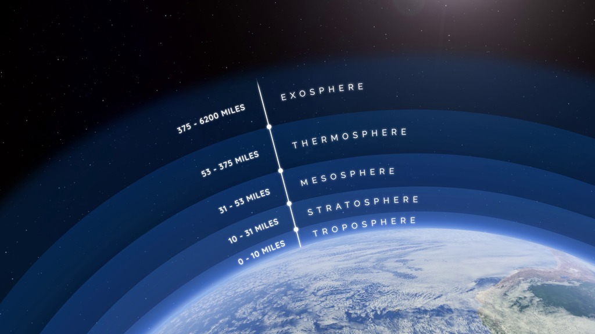

Understanding Atmospheric Layers

Figure 1: Visual representation of the atmospheric process.
Here are the atmospheric layers:
Troposphere
- Location: Ground level up to ~4-12 miles.
- Key Fact: This is where we live and almost all weather occurs.
- Temperature: Gets colder the higher you go. As you climb higher in the troposphere, the temperature drops at a steady rate-roughly 3.6°F per 1,000 feet.
- It isn’t a perfect sphere. It is thickest at the equator (about 12 miles high) because the warm air expands, and thinnest at the poles (about 4 miles high) where the cold air is more dense and compressed.
- Because the sun heats the Earth’s surface, the air at the bottom of this layer is warmer than the air above it. This causes warm air to rise and cool air to sink, which creates the winds and vertical currents that drive our weather.
Did you know?
The Troposphere contains about 75% of the atmosphere's mass and almost all of its water vapor, making it the most dynamic layer for weather phenomena.
Stratosphere
- Location: Above the troposhphere, up to 31 miles.
- Key Fact: Contains the ozone layer, and commercial jets often fly here because the air is very stable.
- Temperature: It gets warmer as you go higher (because of the ozone layer absorbing UV radiation).
Mesosphere
- Location: 31 miles to 53 miles.
- Key Fact: This is where most meteors burn up upon entry, creating “shooting stars.” The air here is thin, but thick enough to cause friction against incoming rocks.
- Temperature: Gets colder the higher you go.
Thermosphere
- Location: 53 miles to 375 miles.
- Key Fact: This layer absorbs high-energy X-rays and UV radiation. While temperatures are very high (up to 3,600°F), it would feel freezing to your skin because the air is so thin there aren’t enough gas molecules to transfer heat to you.
- Temperature: It gets much warmer as you go higher.
Exosphere
- Location: 375 miles to 6200 miles.
- Key Fact: This is the outermost layer of the atmosphere, where air becomes extremely thin and gradually merges with space.